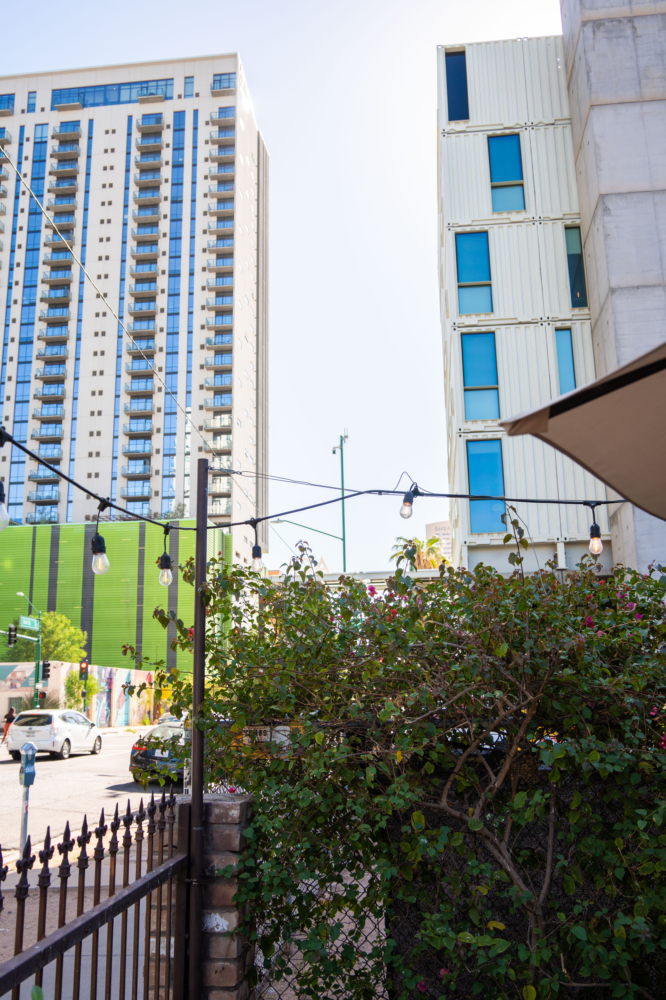
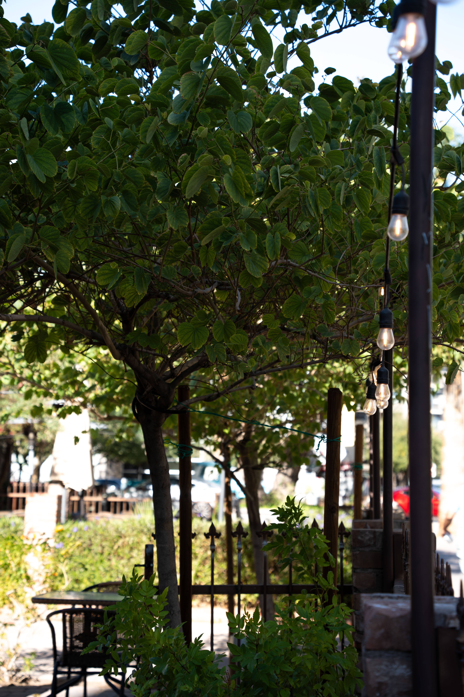
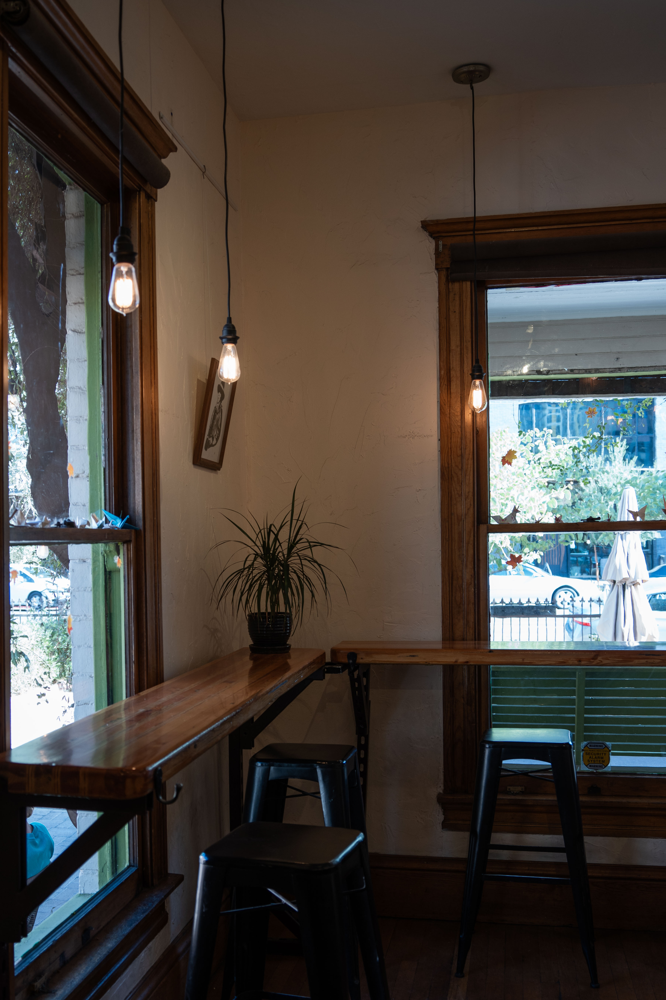
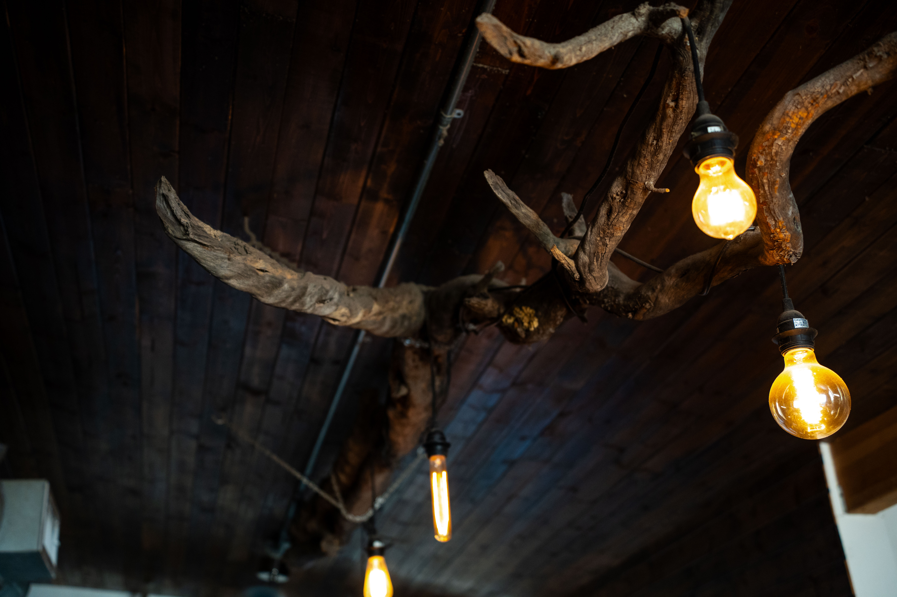
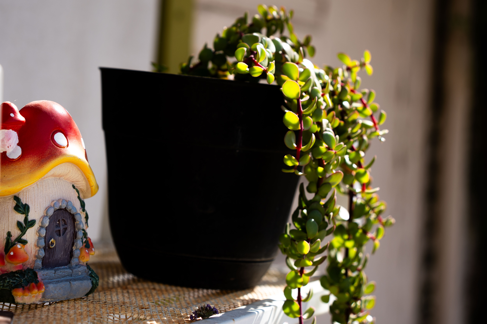
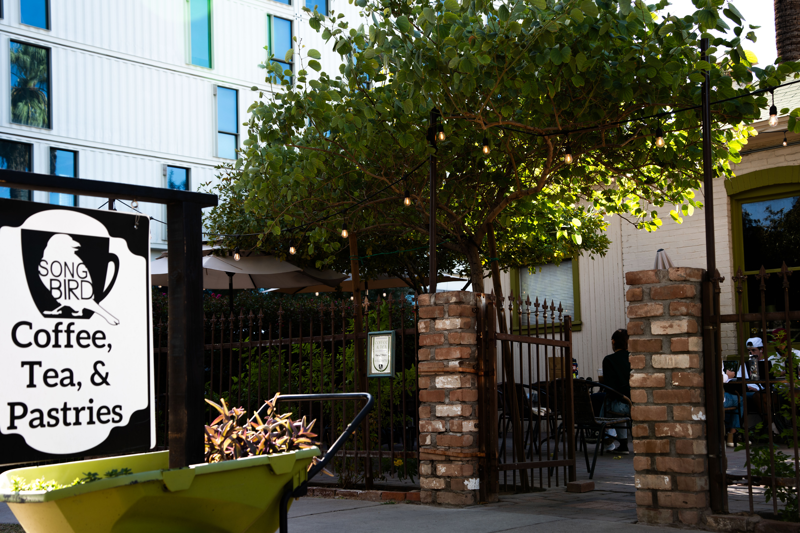
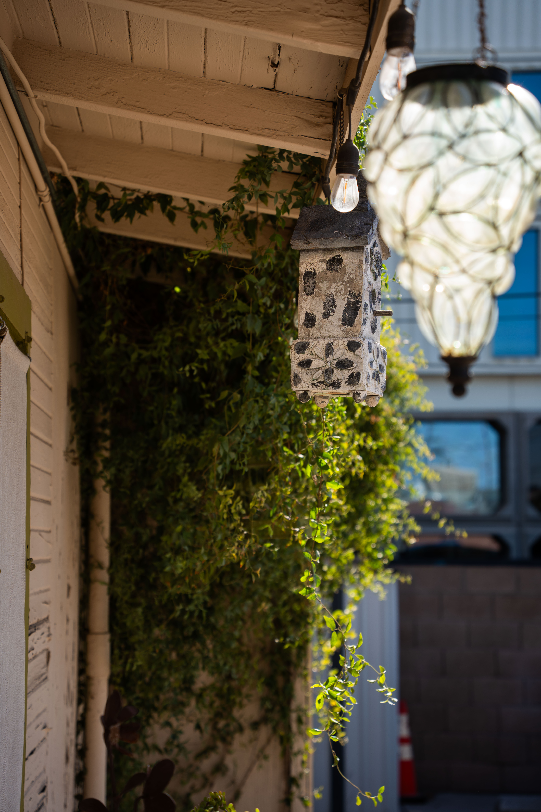

Songbird Coffee and Tea House
-

-

- 
- 
-

-

- 
- 
-

- 
- 
- 
Hours
Every day: 6a-6p
Address
812 N 3rd St Ac, Phoenix, AZ 85004
Phone
1-602-374-4192
Description
Songbird Coffee & Tea House is a quaint coffee shop located in downtown Phoenix between E Mckinley St and N 3rd St. This coffee shop is true to its name with bird houses scattered about, and a plethora of small birds and sparrows staring curiously at guests.
Songbird Coffee & Tea House has a unique aesthetic that can only be summarized as antique shop chic. It’s an oasis of peace and greenery within the grey cityscape of Phoenix.
One of the best parts about coming to Songbird is the seating, there’s a fantastic indoor and outdoor seating area. The indoor feels like an old-timey classic house, completed with artwork and a fireplace. The outside is like a bird garden, with greenery, charging outlets, and most importantly selective shade from the sun.
The overall vibe and atmosphere seem to draw in people of all ages and backgrounds; some people go to read, others to work or study. Some go to share a coffee with friends or family.
- Coffee:
- The coffee is the main selling point here, they also offer a lot of cool teas and CBD options.
- Food:
- This cafe does not offer food; however, they do have housemade pastries which can be filling in a pinch.
- Wifi:
- The wifi here works spectacularly and has a wide range. Even sitting outdoors at the furthest table from the building, the wifi still reaches superbly.
- Seating:
- The seating at Songbird is the main draw of the cafe, with so much outdoor and indoor seating, it’s the perfect space to hang out without feeling too crowded.
- Atmosphere & Aesthetic:
- Songbird doesn’t have a defined aesthetic, but the atmosphere is quirky, open, airy, and cozy.
- Parking:
- Parking can be tricky, but there is metered street parking all around the cafe which is usually available even if the cafe is busy.
- Bathroom:
- There is only one single stall bathroom at this cafe, the decorations are nice and the bathroom is cleanly and fully stocked. However, since it’s only one stall you may have to wait in line. It’s also right next to the register which can make it awkward since you’re waiting in such a small space while someone might be ordering or waiting in line to order right next to you.
- Music:
- The music is usually quiet but relaxing here.
- Creativity:
- This cafe does a good job of playing into their name, Songbird, hosting a bird house that birds do actually use. The greenery and trees in the outdoor section truly make it feel like a garden, and the inside feels like an art gallery with all the decorations on the walls.
- Open Late:
- Yes, if you consider 6p late.
- Order Online:
- No
- Charging Available:
- Yes